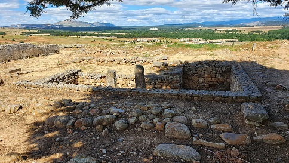
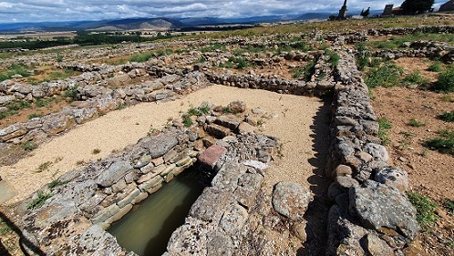

|
Ciudad situada a 7 km. de Soria capital, se localiza en el pueblo de Garray. La ciudad se asienta sobre el cerro de La Muela. El cerro de La Muela emerge sobre el valle del Duero, en medio de una amplia campiña, limitada semicircularmente por las altas elevaciones del Sistema Ibérico. Numancia está situada en la confluencia de los ríos Duero y Tera, paso obligado en las comunicaciones desde el valle del Ebro, a través de los pasos del Sistema ibérico, con el valle del Duero. En este mismo punto vadeaba el río la vía romana, que desde Caesaraugusta se dirigía a Astúrica.
La primera ocupación del cerro se remonta al Calcolítico e inicios de la Edad del Bronce (2500 – 1600 a.e.c). La ciudad Celtíbera se data hacia del siglo III a.e.c. y a ella se atribuyen la cuadrícula central y las dos primeras calles circundantes. Numancia ofreció una dura resistencia a lo largo de veinte años, entre el 153 y el 133 a.e.c., dando lugar a la afamada frase "defensa numantina". Venció a todos los generales enviados por Roma hasta que Publio Cornelio Escipión cercó Numancia. Dispuso siete campamentos uniéndolos con un sólido muro defensivo de 9 kilómetros de perímetro. Después de once meses de asedio la ciudad cayó por inanición, en el verano del 133 a.e.c., los supervivientes fueron esclavizados, la ciudad fue arrasada y su territorio repartido entre los indígenas que ayudaron a Escipión. Sobre los restos de la ciudad Celtíbera, se construyó la ciudad Romana. Se han hallado abundantes restos que indican una ocupación desde comienzos del siglo I a.e.c, al que corresponden las cerámicas monocromas y policromas más características. A partir del siglo I Roma deja su huella en la redistribución y edificación de la ciudad. La vida en Numancia decaerá a partir del siglo III, y los últimos restos hallados de época romana datan del siglo IV. También han aparecido objetos y cerámicas datados en el siglo VI, que permiten hablar de una ocupación visigoda.
La Muralla y la puerta Norte. La ciudad estaba rodeada por una muralla con cuatro puertas de entrada, dispuestas en los puntos cardinales. Se ha reconstruido un tramo de muralla con la puerta norte, defendida por dos torres cuadradas, de estructura de madera. la anchura de la muralla es de 4 m., construida en piedra hasta unos 3’5 m. de altura y rematada en su parte superior por un parapeto más estrecho, de 1’5 m. de altura, hecho con adobe y postes de madera, que deja un adarve o paseo de ronda.
Las Termas romanas. El monumento inacabado a los héroes de Numancia, de 1842, fue realizado sobre los restos de un “caldarium” doble. Se aprecian los orificios para el paso de aire caliente. A la izquierda, a ras del suelo, se puede observar como un estrecho canal conducía el agua sobrante al desagüe central de la calle.

Se han escavado unas 11 hectáreas, la mitad de la superficie calculada de la ciudad, que han sacado a la luz unas 20 calles y manzanas, que nos permiten conocer su trazado y organización. Dos calles paralelas son cruzadas por otras once, dando lugar a una retícula más o menos uniforme, en la que no se han hallado espacios libres o plazas. La parte occidental de la ciudad esta rodeada por una calle redonda, paralela a la muralla que circunda la ciudad. Para evitar el fuerte y frío viento del norte la mayoría de las calles están unidas escalonadamente y con una orientación este-oeste; y sus casas agrupadas en manzanas.
Las calles poseían grandes piedras en el centro que permitían pasar de una acera a otra sin mojarse, ya que los desagües de las casas iban directamente a las calles. El agua de lluvia era recogida en aljibes circulares, a través de pequeños canalillos. Destaca el aljibe rectangular con escalera.

Según Apiano la ciudad de Numancia “estaba rodeada de espesos bosques” y el río Duero era navegable “en pequeños esquifes (...) con ayuda de velas”.
Las guerras celtíberas cambiaron el calendario romano, ya que el año oficial se iniciaba en los Idus de marzo (día 15), que es cuando se nombraban los cargos administrativos y los cónsules para hacer la guerra. Pero cuando querían llegar a la meseta era ya avanzado junio. La guerra solía hacerse en primavera y verano. No podían aprovisionarse y el frío......Por lo que Roma se vio en la necesidad de adelantar su calendario a las kalendas de enero (día 1).
|